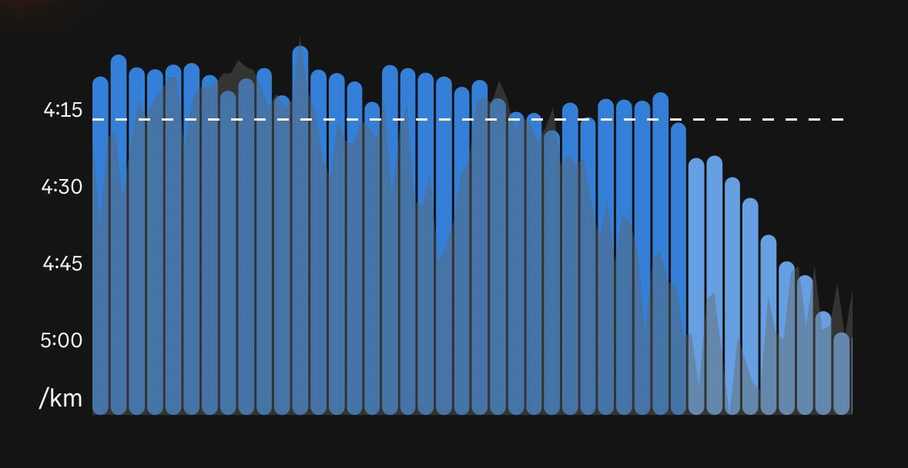

Note: the text was generated with AI based on a voice note where I briefly recalled the experience. I don't currently have enough time to do a write-up myself.
Salisbury Marathon (4 April 2026)
This is the story of my first marathon: the Salisbury Marathon, run on April 4, 2026. Final time: 3:01:53. It was a wild ride—from the training block to the race itself—and I decided to write it down while the memories (and the soreness) are still fresh.
How I got here
After running two Princeton half marathons and a couple of 30K runs in December, I was curious to try the full distance. So I signed up for the Salisbury Marathon and started my training plan.
Training
The training block was a crazy journey. The first several weeks were dominated by battles against the weather, as the winter was brutally cold and snowy. Then I caught the flu for a few days, which set me back further. And then came the shoe phase: I tried the Nike Alphafly 3—a carbon plate shoe—on a long run at marathon pace, and it gave me huge calf issues. I also tried the Vaporfly 4, which produced the same calf problems plus a nasty blister. Despite all of this, I had still gained a lot of fitness over the training block, and going into the race I was thinking something around 2:55 would have been realistic.
Race day preparation
I carb loaded in the days before the race and paid a lot of attention to pre-race nutrition. I had bread and marmalade at 4 AM, with the race starting at 7 AM. I had a detailed fueling plan and I took my first gel just before the start, as planned. I went to the start line feeling great, very pumped.
One important piece of context that I should mention now: most of my training had been done in sub-freezing temperatures. Race day, however, turned out to be a very warm day—about 18°C at the start and up to 22°C by the end.
The race (km 0–32)
I took my gel, went to the start line, and I was feeling great. Then, not even 500 meters into the race, I had stomach pain—as if the gel was still sitting there rather than being digested. This would become the theme of the entire race.
But digestive issues aside, the first part of the race was actually pretty good. I locked into a very steady pace: around 4:08/km for the first 20 km, then a slight slowdown to 4:13–4:14/km up to kilometer 32. The problem was the stomach cramps. The first gel never got digested by the time I had to take the second one, so the second just sat on top of the first. And this kept going for all the subsequent gels, each one stacking on the previous, each one increasing the pain. Several times I thought about stopping to try to vomit, but I didn't.
During the whole race I grabbed one cup of water at every single aid station. Even though I was using the pinching technique, I was still not getting enough—some water kept sloshing out of the cups, and I was sweating far more than I was used to, being so unaccustomed to the heat. Some sections also had direct headwind, which cost a few seconds per kilometer. But nothing too bad, all things considered.
The wall (km 32+)
At kilometer 32, I thought of Pfitzinger's words: "Now you're free to see what you've got." I told myself it was time to push. Instead of increasing, my pace just started dropping—linearly with distance—and I ended up around 5:00/km at the finish line. Textbook bonk. The splits chart below tells the story better than words can.

After the finish
After crossing the finish line, I was completely unable to do anything. Mentally blank. I tried to sip some water, but it was extremely hard because my stomach was hurting so much. I spent over an hour sitting at one of those picnic tables with benches, head in my arms, unable to do pretty much anything, stomach still in pain.
Then, just before the award ceremony—I had placed 3rd in the male 25–29 category—the GI distress suddenly vanished, and I got all my energy back, just like that.
Why the gels didn't digest
This was a textbook case of hitting the wall. All signs point to the same explanation: my gels never got absorbed. They just sat in my stomach the entire race, giving me pain, and I only digested them after sitting at that picnic table for over an hour. So why didn't they digest?
I have a few ideas. When I trained with gels on long fast runs, it was below freezing—often around −10°C—and in those conditions no blood needed to be directed to the skin for cooling. On race day, I was sweating far more than during any training run, which means blood was near the skin to produce sweat, and thus not available to the stomach for digestion. It's also possible that adrenaline at the start played a role, because I didn't even digest the very first gel—the one I took before the gun went off, while I was bouncing on my feet and getting pumped at the start line.
I should also mention that when I got back to the hotel, I noticed salt crystals along my eyebrows and the sides of my forehead. This probably means I was electrolyte depleted as well: if none of the gels were absorbed, then I also never got the sodium from them. My plan had been to get all my sodium from gels, since I was drinking water rather than Gatorade on the course. So I essentially ran the entire race on the glycogen I had stored during the carb loading days, and nothing else.
Reflection
Despite everything that happened, I am very proud of this race. It was my first marathon. I came in 9th place out of 287, and 3rd in the male 25–29 age group. Given what happened with the fueling, I actually think 3:01:53 is a great time—I basically ran the entire distance on stored glycogen alone.
And I'll admit something a bit strange: I'm kind of weirdly happy that I got to experience running purely on glycogen and hitting the wall on my very first marathon. It's a fascinating experience. There's something almost cool about feeling all of these physiological mechanisms playing out in your own body.